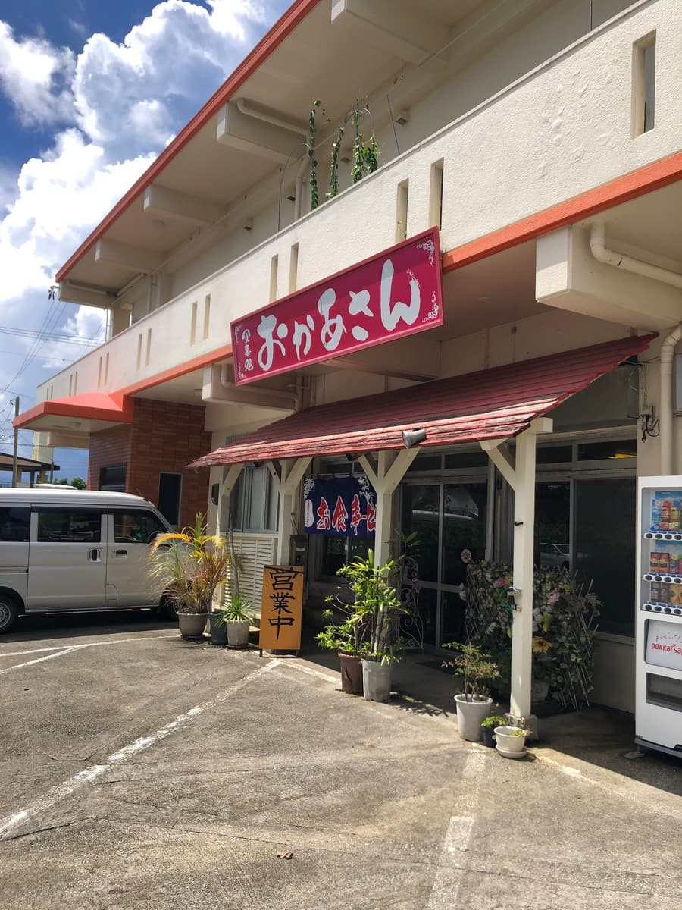
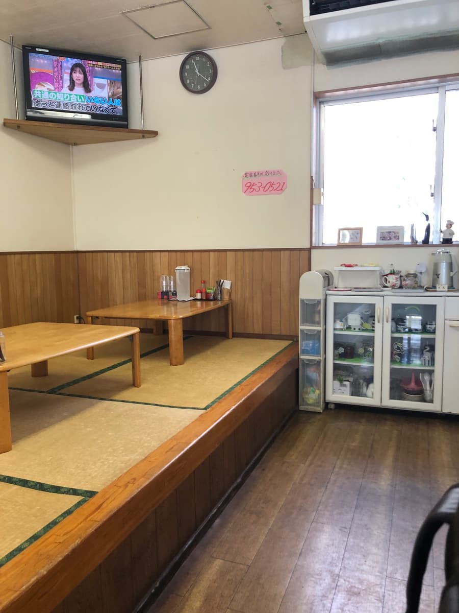
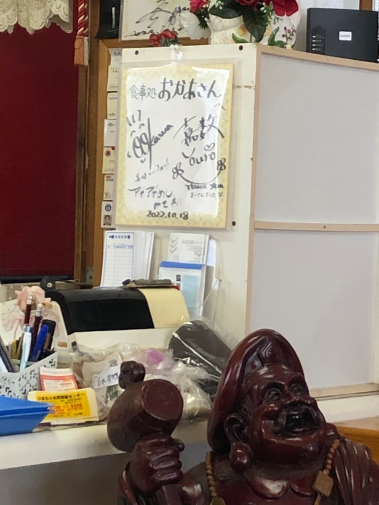
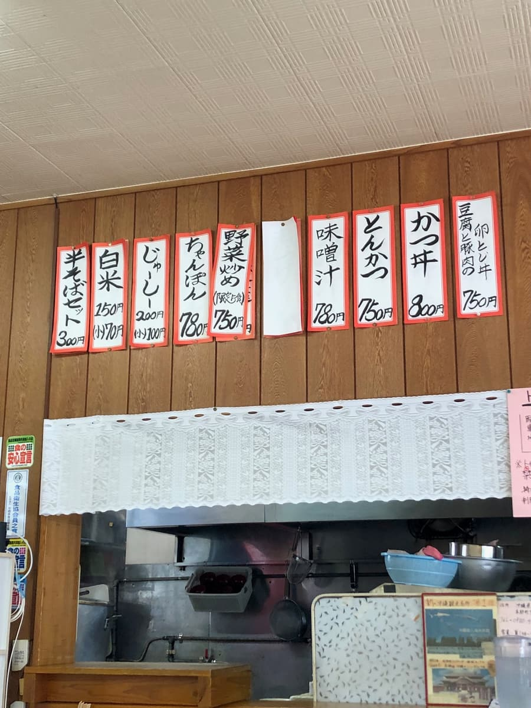
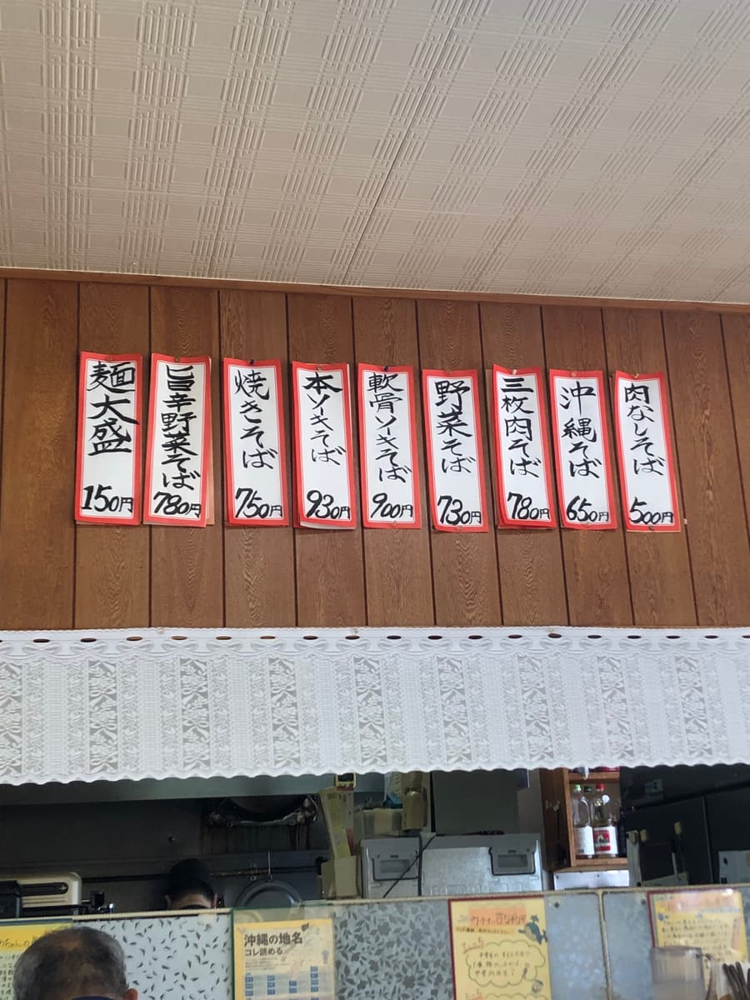
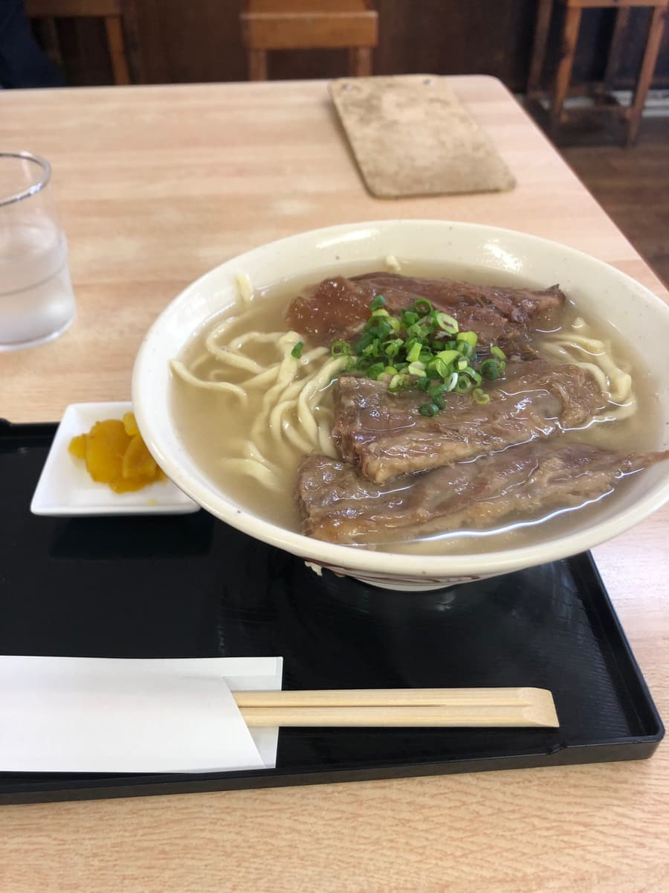
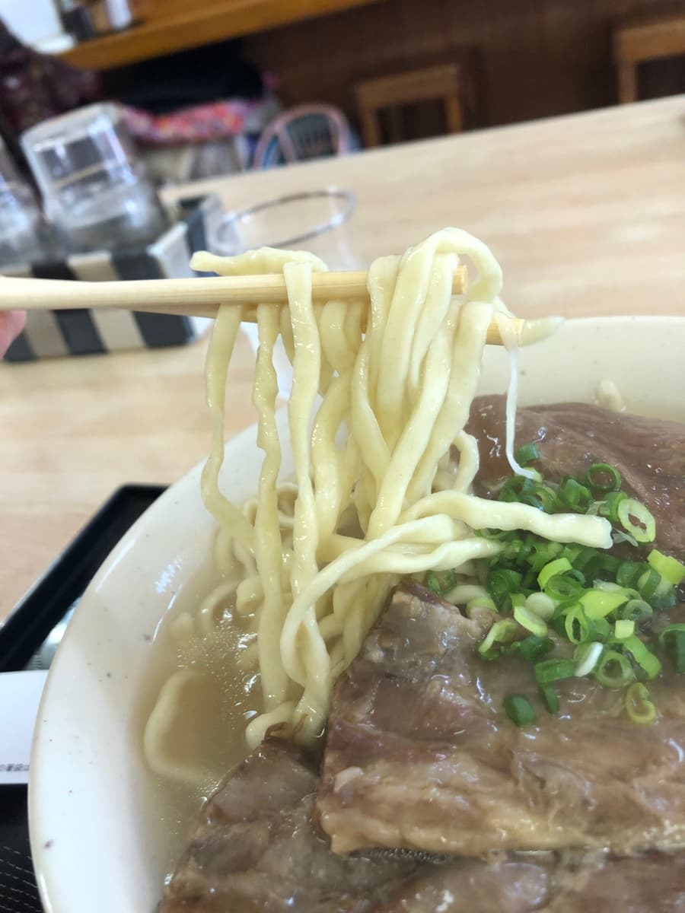

※이 글은 Claude 3.5 Sonnet AI로 작성한 것에 일부 내용을 덧붙였습니다.
2024년 9월에 먹었습니다😄
이번에는 이토만시 자하에 있는 '오카상'을 소개합니다. 동네 분들에게 사랑받는 인기 가게인 것 같네요🏃♂️💨

'오카상'은 빨간 간판이 표지인 소박한 외관이 특징이에요. 가게 안에 들어가면 따뜻한 분위기가 펼쳐져 있네요😌




메뉴를 보면 오키나와 소바의 정번 메뉴가 늘어서 있어요. 이번에는 '연골 소키 소바'를 주문해 봤어요. 기다리는 동안 동네 손님들로 북적이는 모습을 보며 이 가게의 인기를 실감합니다👀

잠시 후, 기다리고 기다리던 '연골 소키 소바'의 등장입니다!🍜 먼저 국물부터 맛봅시다. 순한 돼지뼈 베이스의 국물은 어딘가 그리움을 느끼게 하는 맛이에요. 무난하게 맛있는 느낌이에요.

다음은 면을 먹어 봅니다. 중간 굵기의 살짝 꼬불한 면은 부드러운 편의 식감.
그리고 메인 재료인 연골 돼지갈비(난코츠 소키). 간장 맛이 강한 편이고, 약간 달콤한 양념이 특징이에요. 흐물흐물하게 조려져 있지만, 힘줄 같은 질긴 식감이 조금 남아 있네요.
가게 안을 둘러보니 단골로 보이는 분들이 많아서 북적이는 분위기예요. 동네 분들에게 사랑받는 모습이 잘 느껴져요😊
'오카상'의 오키나와 소바는 특별히 색다른 특징이 있는 건 아니지만, 소박하고 따뜻한 맛이 매력이에요. 동네 분들에게 계속 사랑받는 이유를 알 것 같네요.
다만 개인적인 감상을 말하자면, 맛은 평범하려나 하는 인상이에요. 특별히 놀랄 만한 맛은 아니었지만, 안정된 맛을 제공하고 있는 건 틀림없어요.
이토만시를 방문했을 때는 동네 분들에게 사랑받는 '오카상'의 오키나와 소바를 꼭 한번 맛보시는 건 어떨까요?😉 소박한 맛과 따뜻한 분위기를 즐길 수 있는 건 틀림없어요!
평가(9점/15점): 평범한 느낌이네요😊 종합적으로 보면 안정된 맛을 제공해 주는 '오카상'. 특별히 놀랄 만한 맛은 아니지만, 동네 분들에게 계속 사랑받는 이유를 알 수 있는, 소박하고 따뜻한 오키나와 소바였어요. 여러분도 꼭 가 보세요!🚶♂️🏃♀️
면: ★★★☆☆（3）
수프: ★★★☆☆（3）
토핑: ★★★☆☆（3）